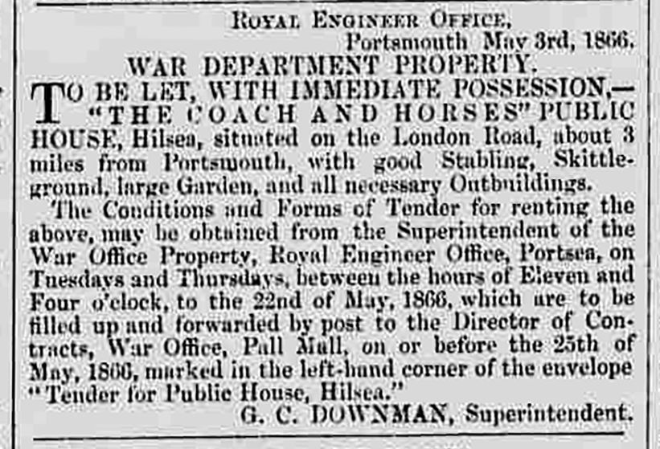
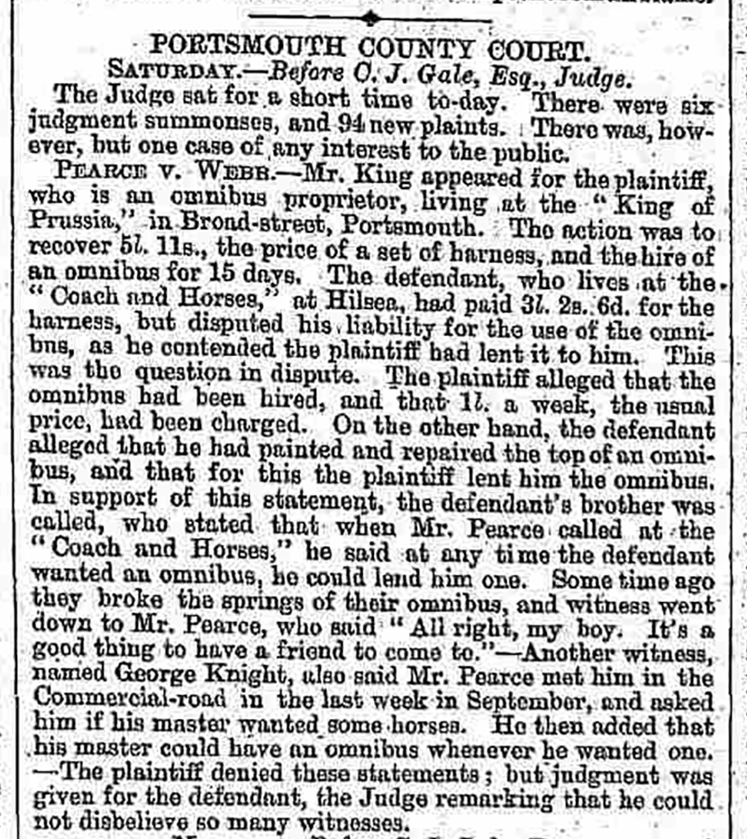
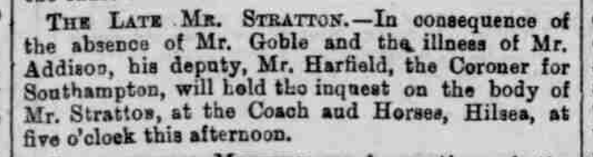
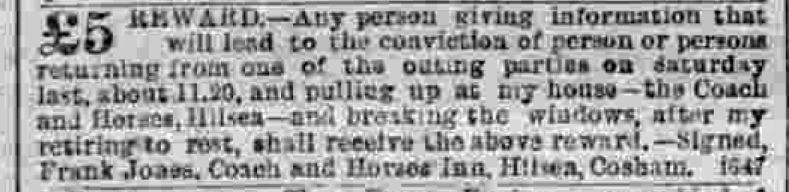
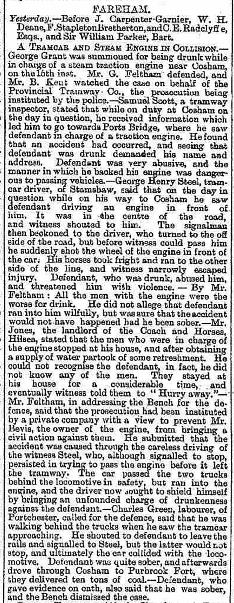
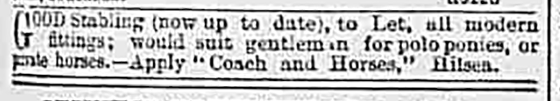
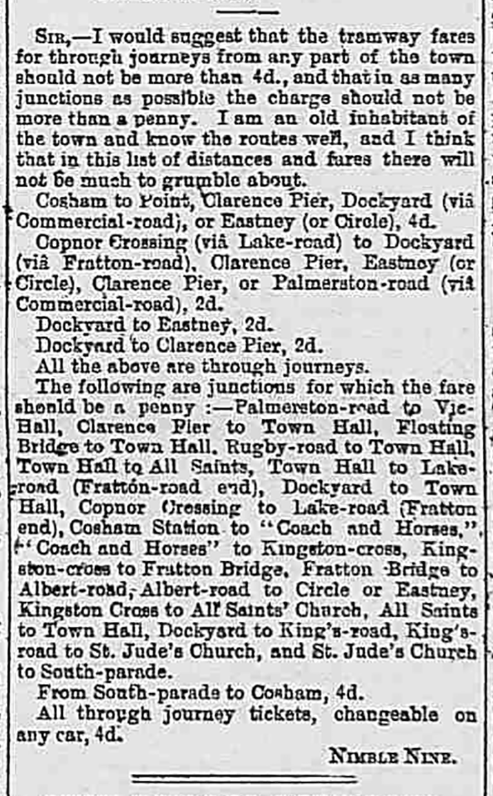
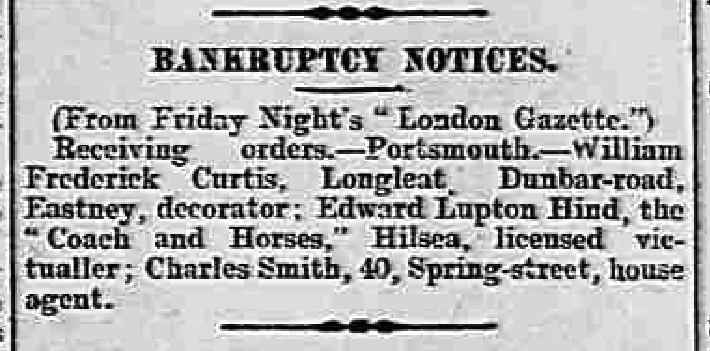

Oxford Journal
Saturday 12 December, 1772WEDNESDAY, Dec. 9.
Extract of a Letter from Portsmouth, Dec. 6.
"On Wednesday night last as Mrs. Lewis, who keeps a Public-house, the sign of the Battle of Minden, at Hilsea near Portsmouth, was going to-bed, she discovered the feet of a man under the bed. Her maid and children lay in the same room; one of the children cried for beer, which proved a very lucky circumstance for her; alarmed as she was, she had nevertheless the presence of mind to pretend not to take any notice of what she saw, but fondly desired the child to lie still and she would draw her some beer. She immediately went down stairs, slipt out of doors, went over to a farm-house opposite, and after alarming them acquainted them with the circumstance. The farmer and three of his men arming themselves went over with her, and found a man under the bed with a razor open in his hand; they instantly secured him, and the next morning carried him before a Justice of Peace, who committed him to Winchester gaol. Thus providentially did this woman and three innocent children escape from being all murdered. What is remarkable is, that this woman's husband was shot about five years ago two miles from Portsmouth, as he was going home, by one Williams, who was executed for the murder, and is hanging in chains on South Sea common.
Greenwood's Hampshire 1826
1826None of the buildings shown appear to match the later location of the Coach and Horses building, implying that the pub did not exist at this point. But the road layout is different from that shown in later maps, and the building that housed the Battle of Minden was likely abandoned at this point.
Marriage
Friday 18 May, 1832Marriage of Samuel Neat and Lucy Seal (source: Ancestry tree of user jetfab). It would be interesting to find out if he is listed as a publican on the marriage certificate.
Hampshire Telegraph
Monday 20 October, 1834The Barrack Board have given directions for the sale of the materials of the Battle of Minden, public-house, at Hilsea, about sixty other small dwelling-houses, at Portsea, and the wooden sheds on the Redoubt at the Mill-dam; which property has long been untentanted, unprofitable, and permitted to go into decay. It is intended to clear the ground and let it. The possession of this property was thought necessary, by a former Barrack-board, to connect the public line of fortifications in the approach to the Garrison.
Comment
If this happened, the Battle of Minden building cannot have been reporposed as the Coach and Horses building.
Hampshire Telegraph
Monday 05 October, 1835TO MERCHANTS, BUILDERS, & OTHERS.
TO be SOLD by AUCTION, by Mr. WINDSOR, on Wednesday next, October the 7th, 1835, precisely at eleven o'clock, in a Field at the back of the Coach and Horses, Hilsea, in the island of Portsea,—About 100 Lots of Good OAK & FIR BEAMS, oak, Fir, and Elm Plank, Floor and other Timber, Firewood, &c. having been broken up from H.M. late brig Hardy, built in the year 1808.
The whole will be Sold without reserve, and is well worthy the attention of Builders and Others.—Catalogues to be had at the Coach and Horses, Hilsea.
Hampshire Chronicle
Monday 01 July, 1839
An inquest was held at the Coach and Horses at Hilsea, near Portsmouth, by Mr Longcroft, on the body of Jonas Over, of Easton, near this city, found dead on Monday in a field of standing oats at Hilsea, about 100 yards from a footpath leading from Cosham to Landport. The body, from its advanced state of decomposition, exhibited a sad and distressing spectacle, having lain in the situation in which it was found ten or eleven days. The poor fellow had been engaged for some weeks on the premises of Mr. Baker at Wymering but had completed and left his work there on the 1st of June and had since been employed at the erection of some new buildings at Cosham, and was last seen there on the 13th inst. No direct evidence appearing as to the cause of his death, a verdict of Found Dead was returned, and the body interred the same evening in Wymering church-yard. Whatever may have occasioned the death of the poor fellow, there is reason to hope, from the easy position in which the body was found, that it was occasioned by no act of violence.
1841 Census
Sunday 06 June, 1841| Name | Age | Occupation |
|---|---|---|
| Samuel Neat | 45 | Publican |
| Lucy Neat | 35 | — |
| Salley Neat | 15 | — |
| Samuel Neat | 3 | — |
Hampshire Telegraph
Saturday 25 May, 1850TO be LET for the Summer Season. — Respectable FURNISHED APARTMENTS, a short distance from Portsea, and within ten minutes walk of the Cosham Station of the London and South-Western Railway.
Address X.Y.Z. Coach and Horses, Hilsea.
Comment
Given the low number of occupants on the 1841 and 1851 censuses when compared with the 1861, I think the layout of the building must have been reworked between 1851 and 1861, moving from furnished apartments to lodging rooms.
Portsmouth Times and Naval Gazette
Saturday 15 February, 1851BEDHAMPTON.
On Thursday evening shortly before 5 o'clock a shocking accident occurred to a waggoner in the employ of Mr. Henry Stoueham, miller of Bedhampton. It appears that the waggoner was sitting in the front part of the waggon driving the Team, and one of the shaft horses when near Hilsea, commenced kicking in a fearful manner and the unfortunate man received a kick which broke one of his legs, and severely injured the other. He was conveyed to the Coach and Horses, near which the accident occurred, where he received medical assistance. The horse became entangled in the harness, but was extricated with promptitude, and but little injured.
1851 Census
Sunday 30 March, 1851| Name | Relation | Condition | Age | Occupation | Where born |
|---|---|---|---|---|---|
| Samuel Neat | Head | Married | 56 | Licensed Victualler | Bramshaw, Hants |
| Lucy Neat | Wife | Married | 40 | — | Soberton, Hants |
| Elizabeth Neat | Daughter | — | 11 | Scholar | Wymering, Hants |
| Rosina Neat | Daughter | — | 9 | Scholar | Wymering, Hants |
| George E Neat | Son | — | 7/12? | Scholar | Wymering, Hants |
| Arthur Smith | Servant | Single | 32 | Servant | Hayling Island, Hants |
Portsmouth Times and Naval Gazette

Hampshire Telegraph
Saturday 13 October, 1855NEAT—On the 18th ult., at Hilsea, in his 53rd year, Mr. Samuel Neat, Landlord of the Coach and Horses Inn, much respected by all who knew him.
Hampshire Telegraph
Saturday 01 November, 1856
GOVERNMENT PROPERTY, HILSEA.
TO be LET, with Immediate Possession,—The COACH AND HORSES PUBLIC HOUSE, situated on the London Road, about Three Miles from Portsmouth, with good stabling, skittle ground, large garden, and all necessary outbuildings.
Tenders to be deliverd at Pall Mall, addressed to the "Director General of Contracts," on or before the 30th November, 1856.
For further particulars as to the Property, application to be made to the Superintendent Government Property, Hilsea.
Hampshire Telegraph
Saturday 08 November, 1856GOVERNMENT PROPERTY, HILSEA.
To be LET, with Immediate Possession,—The COACH AND HORSES PUBLIC HOUSE, situated on the London Road, about Three Miles from Portsmouth, with good stabling, skittle ground, large garden, and all necessary outbuildings.
Tenders to be delivered at Pall Mall, addressed to the Director General of Contracts," on or before the 30th November, 1856.
For further particulars as to the Property, application to be made to the Superintendent Government Property Hilsea.
Superintendent's Office, Hilsea,
1st November, 1856.
Hampshire Telegraph
Saturday 10 January, 1857COACH AND HORSES, HILSEA.
TO INNKEEPERS & OTHERS.
W. H. G. HILL has received instructions from Mrs. NEAT, who is leaving the above House, to SELL by AUCTION, on Friday, January 16th, 1857, on the premises,—The HOUSEHOLD FURNITURE, Fittings, Stock-in-Trade, and Effects of the above well-found Public-house.
The Household Furniture consists of mahogany four-post bedsteads and furniture, feather beds and bedding, bolsters and pillows, palliasses, oak secretary, mahogany chest of drawers, pier and dressing glasses; pembroke and card tables, seven deal tables, quantity of ash and mahogany chairs, stools and settles, booth tables, roller blinds and brass racks, spittoons, fenders and fire-irons, knives and forks, three stump bedsteads, Kidderminster carpet, 30-hour clock, one set China tea service, a large quantity of plates and dishes, double and single guns.
In the Bar will be found 4-motion beer engine, with pipe and tapping cocks complete; spirit casks with brass taps, labelled spirit bottles, ale and grog glasses, 25 pewter measures, tin funnels[?], stone jugs, tin beer cans, the remaining stock of beer and spirits, case of champagne, 8-day spring dial.
The Yard contains 22-hole pigeon box, set of skittle and four-corner pins and ball, flag staff, beer stands, rabbits and hutches, fowls, well-bred yard dog and house, 15 round[?] ladder, 5-barred gate, 20ft. water trough, taps and lead pipe, and a variety of other effects.
Catalogues are in preparation and may be had of the Auctioneer, at his Office, 14, Commercial-road, Landport; or at the place of Sale, three days before the auction.
The goods may be viewed the morning of Sale until the Auction commences.
Owing to the number of lots the Sale will commence at Eleven o'Clock precisely.
Comment
Lucy Neat continues running the business until at least October 1863, but presumably she came close to abandoning/losing it after her husband died. By 1881 she is living at Wymering Road Alms House, and she dies in 1890.
1861 Census
| Name | Relation | Condition | Age | Occupation | Where born |
|---|---|---|---|---|---|
| Lucy Neat | Head | Widow | 51 | Licensed Victualler | Earnley, Sussex |
| Hannah Neat | Daughter | Single | 19 | Laundress | Hilsea, Hants |
| George E Neat | Son | Single | 10 | Scholar | Hilsea, Hants |
| Robert Wilson | Son-in-law | Married | 27 | ??? | Ireland |
| Elizabeth V Wilson | Daughter | Married | 21 | Dressmaker | Hilsea, Hants |
| Samuel H Wilson | Grandson | Single | 8/12 | — | Hilsea, Hants |
| Arthur Smith | Servant | Single | 41 | Ostler | Hayling Island, Hants |
| Thomas Cox | Lodger | Single | 36 | Labourer on Portsbridge Fortification | Chichester, Sussex |
| James Ferber | Lodger | Single | 22 | Waterford, Somerset | |
| Alfred Leister | Lodger | Single | 20 | Andover, Hants | |
| Thomas L Gale | Lodger | Single | 57 | Hampton, Hants | |
| John Clark | Lodger | Single | 34 | Alton, Hants | |
| Thomas Heasman | Lodger | Single | 21 | East Grinstead, Sussex | |
| George Stevens | Lodger | Single | 32 | — | |
| Paul Jones | Lodger | Single | 42 | — | |
| John Smith | Lodger | Single | 34 | Crobom Common | |
| Francis Carter | Lodger | Single | 21 | Andover, Hants | |
| Henry Sheppard | Lodger | Single | 67 | Chichester, Sussex | |
| Peter Brown | Lodger | Single | 67 | ??? | |
| William Parfit | Lodger | Single | 21 | Peterfield, Hants |
Portsmouth Times and Naval Gazette

Hampshire Advertiser
Saturday 03 May, 1862Hampshire Telegraph

Hampshire Advertiser
Saturday 23 August, 1862
Assaulting a Landlady.—George Goodwin was charged by Mrs. Lucy Neat, landlady of the Coach and Horses, at Hilsea, with having assaulted her. The prisoner pleaded guilty, and was fined 15s and 7s 6d costs; in default of payment, fourteen days' hard labour.
Hampshire Chronicle

Portsmouth Times and Naval Gazette

Hampshire Advertiser
Saturday 26 December 1863Portsmouth Times and Naval Gazette

Portsmouth Times and Naval Gazette
Saturday 13 February, 1864
Thomas Martin was charged with having, on the 5th inst., stolen two pickaxes, the property of Edward Custance, from the Government Works at Hilsea. During the last six weeks the proscutor had lost upwards of 80 "picks" from the works, and in consequence of information received a man was sent on the day named to the Coach and Horses, at Hilsea, where the prisoner was drinking, and purchased of him the two picks produced, which were identified by the prosecutor as his property. The prisoner was committed for trial at the ensuing Assizes.
Hampshire Chronicle

Hampshire Telegraph

Saturday 05 May, 1866Portsmouth Times and Naval Gazette
Saturday 29 September, 1866
[...]
William Brown, brickmaker, of No. 2, Kingston-road, Buckland, said he knew the two prisoners. On Monday, the 17th inst., about half-past eight o'clock in the morning, he saw them at Mr. Allen's beershop. Singleton called him in and asked him to have half a pint of beer, which he did. He saw a quantity of gold in Singleton's hand; he could not say how much. He did not see any silver; it was all gold. McGhie paid for one pot of beer with a sixpence. Singleton hired a cart at Allen's of a man named Benham. He did not hear what they said; they went outside and hired the cart and he remained inside. They left together, but neither of them got into the cart at that time. When they got a little way along the road, they asked him (witness) to have some brandy, and they went into Mr Hayward's, the White Swan, and had half a pint of brandy, which McGhie paid for with a shilling and two-pence. They then went to the Blue Anchor, at Kingston-cross, kept by Mr. Churcher, and there they had a pint of brandy; Singleton called two men in and they had some of the brandy; and he went and got a loaf and some cheese and gave it to them. The men were strangers. They then went to the Sportsman, and the two men went with them. There they had two pots of beer. Witness then went home to breakfast, and Singleton went away in a cart. He did not see which way McGhie went; he did not see him afterwards. This was about 10 o'clock.
Cross-examined: He didn't know that they called this "going on a spree." He did not know whether it was a practie for men like the prisoners and himself to go about like this before breakfast; he never went with them before. He had a "drop" at his own work,and with other men at times. He was not aware that Singleton was a general dealer.
Edward Albert Philip Cleife, a bricklayer, residing at 7, Buckland-street, said that on Monday, the 17th inst., he drove a cart for Mr Benham, which had been hired by Singleton. He took him up at Kingston-cross about 10 o'clock in the morning, and drove him to Gravel Hill, a distance of about 14 miles. On the road he frequently stopped at publichouses; he should think four or five times. At the Leopard at Purbrook he called for some beer and brandy and treated the men in the tap-room. He did not know how much brandy he had, but he had one pint. He stopped at the Coach and Horses at Hilsea; witness had a bottle of ginger beer, and Singleton had some beer and treated a man who worked there. He recollected the George at Portsdown Hill; Singleton had some beer there, and treated some beer to any one who liked to have it. He also stopped at Horndean, and there he had half a gallon of beer, and half a pint of brandy. When they got to Gravel Hill they had half a pint of brandy. Singleton paid Mr. Benham for the horse and trap, and gave witness half a sovereign in addition to this for himself.
[...]
Portsmouth Times and Naval Gazette

Hampshire Telegraph

Hampshire Telegraph

Portsmouth Times and Naval Gazette

Hampshire Telegraph

Hampshire Telegraph

Portsmouth Times and Naval Gazette
Saturday 10 September, 1870Hampshire Advertiser

Portsmouth Times and Naval Gazette

Hampshire Chronicle
Saturday 08 October, 1870Hampshire Advertiser

Portsmouth Times and Naval Gazette
Saturday 17 December, 1870Hampshire Advertiser

Portsmouth Times and Naval Gazette
Saturday 24 December, 1870Hampshire Advertiser
Wednesday 08 February, 1871Hampshire Telegraph
Saturday 20 May 1871Hampshire Advertiser
Wednesday 12 July, 1871Portsmouth Times and Naval Gazette
Saturday 15 July 1871Portsmouth Times and Naval Gazette
Saturday 05 August, 1871
[...] The body of Eliza Varndell was washed up on the beach at Hilsea an hour or so after the accident occured, and was removed to the Coach and Horses public-house. [...]
Hampshire Telegraph
Wednesday 23 August, 1871Hampshire Telegraph
Saturday 23 September 1871Hampshire Telegraph

Wednesday 29 November, 1871Portsmouth Times and Naval Gazette

Hampshire Advertiser

Hampshire Telegraph

Hampshire Advertiser
Wednesday 03 April, 1872
LOCAL LIQUIDATION CASES
Since the publication of the last official list of debtors petitioning under the Liquidation Clauses of the Bankruptcy Act of 1869, there has been 164 additional new cases in town and country, including the following local petitioners, viz:—
[...]
RE EDMUND WEBB, of the Coach and Horses, Hilsea, licensed victualler.—Creditors to meet at the offices of Mr. Edmonds, No. 46, St. James's-street, Portsea.—Solicitor for the debtor, Mr.. G. H. King, of 20 Union-street, Portsea.
[...]
Hampshire Telegraph
Wednesday 08 May, 1872FAREHAM PETTY SESSIONS.
TUESDAY (yesterday).—Before the Rev. J. T. Maine and Rear-Admiral H.Chads.
TEMPORARY TRANSFER.—Josiah Webb, of the "New Coach and Horses," public-house, at Hilsea, applied for a temporary transfer of the licence of that house to Thomas Nicholson, son of the proprietor of the "White Horse" public-house, West-street, Fareham.— The magistrates granted the application.
Hampshire Advertiser

Hampshire Advertiser
Wednesday 19 February, 1873
Hampshire Telegraph
Saturday 31 January, 1874
Hampshire Telegraph
Wednesday 13 May, 1874Hampshire Telegraph
Saturday 15 April, 1876
Hampshire Telegraph
Wednesday 11 July, 1877Hampshire Advertiser

Portsmouth Evening News
Monday 02 September, 1878FOUND DROWNED.[...]—The body of a man was found yesterday morning in the Portsbridge Canal near the bridge. It was conveyed to the Coach and Horses, where an inquest will be held.
Hampshire Telegraph

Hampshire Advertiser
Wednesday 22 January, 1879Portsmouth Evening News
Monday 20 October, 1879Portsmouth Evening News

Monday 21 October, 1879Hampshire Telegraph

Hampshire Telegraph

Hampshire Telegraph
Saturday 19 February, 18811881 Census
Sunday 03 April, 1881| Name | Relation | Condition | Age | Occupation | Where born |
|---|---|---|---|---|---|
| Charles Henry Newton | Head | Married | 33 | Licensed Victualler | Southsea |
| Francis Eliza Newton | Wife | Married | 38 | — | Gosport |
| Arthur James Martin | Step Son | — | 12 | — | Southsea |
| Ernest William Martin | Step Son | — | 9 | — | Southsea |
| Sydney Herbert Martin | Step Son | — | 5 | — | Hilsea |
| Edith Adah Martin | Step Daughter | — | 3 | — | Hilsea |
| Nellie Newton | Daughter | — | 1 | — | Hilsea |
| Elizabeth Jane Griffin | Servant | — | 16 | Dom Servant | Buckland Portsmouth |
Portsmouth Evening News
Tuesday 03 May, 1881Portsmouth Evening News
Tuesday 31 May, 1881FAREHAM.
Agent for this paper, Mr. E. OVER, Portland-street.
PETTY SESSIONS.
Yesterday.—Before Admiral Chads, Sir F. Sykes, Bart., and F. Bretherton, Esq.
AFFILIATION SUMMONS—James Rappe, a driver on the Portsmouth Tramways, of 64, Emanuel-street, Landport, was summoned to show cause why an order should not be made on him for the support of the illegitimate child of Eliza Collins, of the Coach and Horses, Hilsea, of which she alleged him to be the father.—Mr. Wainscot appeared in support of the complainant, and Mr. Feltham for defendant.—After a lengthy hearing, in which the evidence was of a most contradictory nature, the Bench dismissed the summons for want of corroborative evidence.
Comment
The Fareham Petty Session Court Register for 1881 (40M70/XP4), stored at the Hampshire Record Office, Winchester, contains less information than this newspaper report.
I expected Eliza Collins to be a lodger, but the 1881 census suggests that the building is not operating as a lodging house at this time. I don't really know where she came from, or went to.
Portsmouth Evening News
Monday 04 July, 1881THE TRAMWAY EXTENSION.—At eleven o'clock this morning a service of two horse cars was commenced between North End, and the Coach and Horses, Hilsea. Between the latter place and Cosham the passengers are conveyed by omnibuses.
Portsmouth Evening News
Friday 07 October, 1881Portsmouth Evening News
Tuesday 10 January, 1882LOST.
LOST, between Coach and Horses, Hilsea, and Wiltshire Lamb, Landport, plain Gold Ear-ring. — Finder returning same to Mrs. G. Hall, Cosham, shall receive 5s. reward.
Hampshire Telegraph
Wednesday 05 April, 1882FAREHAM.
TRANSFER OF LICENCES.— [...] New Coach and Horses, Hilsea, from Charles Newton to Frank Jones; [...]
Hampshire Telegraph
Saturday 19 August, 1882Hampshire Telegraph
Wednesday 23 August, 1882Portsmouth Evening News
Tuesday 10 July, 1883WANTED. Respectable middle-aged woman for general work; widow, or one whose husband is at sea would suit.—Apply, Coach and Horses, Hilsea.
Portsmouth Evening News
Saturday 18 August 1883SHOEMAKERS.—Wanted, a good General Hand. — Apply, Coach and Horses, Hilsea.
The Evening News

FAREHAM.
PETTY SESSIONS.
Yesterday. — Before E. J. Sartoris, Esq. (in the chair), F. Bradshaw, Esq., and Sir Frederick Sykes, Bart.
REFUSING TO QUIT.— Charles H. Newton and Eleanor Newton, man and wife, were summoned for being drunk and refusing to quit the Coach and Horses, Hilsea, when requested to do so by the landlord, Mr. Jones, on the 2nd inst.— They were fined 15s. each, including costs.
Comment
It seemed likely that the Charles H. Newton here was the Charles Henry Newton who was previously landlord, but his wife's name, on both the 1881 and 1891 censuses, was Francis E[liza] Newton. Nellie (his daughter) could be short for Eleanor... could his wife have used Eleanor as a variation on Eliza?
Portsmouth Evening News
Monday 29 October, 1883Girl (respectable) wanted, about 18, as General Servant.—Apply Coach and Horses, Hilsea.
Portsmouth Evening News
Saturday 15 August 1885
£5 REWARD.—Any person giving information that will lead to the conviction of person or persons returning from one of the outing parties on Saturday last, about 11.20, and pulling up at my house—the Coach and Horses, Hilsea—and breaking the windows, after my retiring to rest, shall receive the above reward.—Signed, Frank Jones, Coach and Horses Inn, Hilsea, Cosham.
Portsmouth Evening News
Tuesday 08 September 1885
GENERAL Servant (respectable) about 18 or 19.— Apply Coach and Horses, Hilsea.
Portsmouth Evening News
Thursday 17 December 1885HOUSE — 366, Commercial-road — to Let. — Apply F. Jones, Coach and Horses, Hilsea.
Hampshire Advertiser
Saturday 02 January, 1886REFUSING TO QUIT.—Thomas Stubbs, of Cosham, was charged by the police with having been drunk in the Coach and Horses Inn at Hilsea, and refused to quit when requested, on the 21st ult. — The defendant pleaded guilty, and was convicted in the penalty of 20s, including costs; or fourteen days imprisonment, with hard labour, in default.
Portsmouth Evening News
Monday 08 February, 1886Hampshire Advertiser
Saturday 31 July, 1886Portsmouth Evening News
Monday 02 August, 1886Hampshire Telegraph
Saturday 07 August, 1886Hampshire Telegraph
Saturday 28 January 1888
Hampshire Telegraph
Saturday 01 September, 1888Hampshire Telegraph
Saturday 07 December, 18891891 Census
Sunday 05 April, 1891| Name | Relation | Condition | Age | Occupation | Where born |
|---|---|---|---|---|---|
| Frank Jones | Head | Widow | 71 | Licensed Victualler | Marston Magna, Somerset |
| Harriett Cleall | Daughter | Married | 37 | Housekeeper (Dom) | Marston Magna, Somerset |
| Edith H Cleall | Grand daughter | Single | 14 | Scholar | Portsmouth, Hants |
| Caleb Williams | Lodger | Married | 49 | Bootmaker | Timberscombe, Somerset |
| Amelia Williams | Lodger | Married | 48 | Stocking[?] Nurse | Marston Magna, Somerset |
Comment
Note: The ad for a General Hand in 1883 Implies Caleb Williams has been living at the pub since at least then.
Portsmouth Evening News
Saturday 13 January, 1900SMOKING CONCERT AT HILSEA.—A very enjoyable smoking concert was held on Wednesday evening at the "Coach and Horses," Hilsea, by the non-commissioned officers of the batteries stationed at Hilsea, to bid farewell to comrades under orders for South Africa. The departing warriors were heartily toasted, and a capital programme was successfully carried out.
1901 Census
Sunday 31 March, 1901| Name | Relation | Condition | Age | Occupation | Where born |
|---|---|---|---|---|---|
| Edward L Hind | Head | Married | 33 | Licensed Victualler | Blyth Rotherham, Yorkshire |
| Jessie L Hind | Wife | Married | 26 | — | Portsmouth, Hants |
| Thomas Hunter | Nephew | Single | 13 | Coal Merchant's Clerk | Portsmouth, Hants |
| Mirian E Feast | Servant | Single | 23 | Cook (Domestic) | Fonthley, Hants |
| Everest Chandler | Boarder | Single | 22 | ??? | Manchester |
| John Stroud | Boarder | Single | 50 | ??? | N. York, USA |
| Earnest Porter | Boarder | Single | 21 | Foreman ??? | Huling, Warrington |
| Charlie Hollis | Servant | Single | 20 | Cellar Man | Darfield, Yorkshire |
| George Kirchen | Boarder | Single | 38 | — | ??? |
Portsmouth Evening News
Saturday 27 April, 1901WANTED a Young Man to make himself generally useful. Live indoors; must be good character.— Apply "Coach and Horses," Hilsea.
Portsmouth Evening News
Friday 03 May, 1901
Good Stabling (now up to date), to Let, all modern fittings; would suit gentleman for polo ponies, or private horses.—Apply "Coach and Horses," Hilsea.
Portsmouth Evening News
Wednesday 04 September, 1901Comment
Note: A W White is the father of Gladys White.
Portsmouth Evening News
Tuesday 17 September, 1901
Portsmouth Evening News
Tuesday 18 March, 1902HIND—On the 15th inst., at the "Coach and Horses," Edward Hunter Hind, the dearly-loved baby of Edward and Jessie Hind, agred three months and 14 days.
Hampshire Telegraph
Saturday 26 April, 1902Portsmouth Evening News
Thursday 06 November, 1902LOST—Between Cosham and the Coach and Horses, a Lady's silver-mounted Driving Whip.—Apply White, The Poplars, North End.
Comment
Note: there's a good chance that the lady who lost her whip was Gladys White, who Gladys Avenue is named for.
Portsmouth Evening News
Friday 20 February, 1903For Sale, medium-size Box Mangle, cheap.—E. Bye, back Coach and Horses, Hilsea, after 8 p.m.
Portsmouth Evening News
Wednesday 20 May, 1903Portsmouth Evening News
Thursday 11 June, 1903Portsmouth Evening News
Saturday 12 November, 1904
BANKRUPTCY NOTICES.
(From Friday Night's "London Gazette.")
Receiving orders.—Portsmouth.—William Frederick Curtis, Longleat, Dunbar-road, Eastney, decorator; Edward Lupton Hind, the "Coach and Horses," Hilsea, licensed victualler; Charles Smith, 40, Spring-street, house agent.
Portsmouth Evening News
Monday 21 November, 1904CREDITORS' MEETINGS.
CURIOUS CASE OF THE "COACH AND HORSES."
THE LEASE OF A FREE HOUSE.
The first meeting of the creditors of Edward Hind, licensed victualler, of the "Coach and Horses," Hilsea, was held at the Official Receiver's office, Portsmouth, this afternoon.
The liabilities amounted to £310 17s. 9d., and the assets totalled £27 14s. 5d., leaving a deficiency of £283 3s. 4d. The failure was attributed to insufficient turn-over in business and increased assessments.
The Official Receiver's statement showd that the debtor was originally a commercial traveller in tea, but gave up this calling in favour of an off-license business. Having saved £120, in 1897 he took over the "Coach and Horses," Hilsea, from the War Department, the lease, by consent of the War Department, being held by the United Brewery Company, who found the purchase money. The rates had increased from £42 to £152 while he was tenant of the house, and he had lost about £120 in the business.
The chief debtors were:—Portsmouth United Breweries' Company, £176 15s. 8d.; Mr. B. Murtough, £25 6s. 1d.; Mr. Miller, tobacconist, £16 16s. 1d.; Meyhew and Arnold, £14 2s. 6d.; and Mr. Rose, £10 16s. 9½d.
The Official Receiver said that the United Breweries Company paid £1,400 for the lease, and with the consent of the War Office took the lease on mortgage. It was a remarkable fact in this case that the house was supposed to be a free one. Yet in the lease the brewers were allowed to become mortgagees, and the brewers, he pointed out, were always ready to tie a house. A quesiton was whether the lease was void, because it contained a bankruptcy clause.
Mr. Franckeiss (who appeared for the Brewery Company) said he had looked through the lease, and there was no bankruptcy clause.
The Official Receiver pointed out that that removed a difficulty from the case. He went on to suggest that the house should either be advertised or handed over to the United Breweries' Co.
Mr. Murtough thought the latter course would be the best, and it was ultimately agreed to.
Comment
I believe Mr. B. Murtough to be Bernard Murtough, mineral water manufacturer, who would have been ~67 at the time of the creditors' meeting. I have a photograph of the Coach and Horses (not yet published here) showing an advertisment for Webb & Salmon mineral water on the side of the building a few years previously.
Portsmouth Evening News
Thursday 01 December, 1904
DEATHS.
HIND—On the 28th ult., Edward Lupton Hind, of the "Coach and Horses," the beloved husband of Jessie Hind.
Comment
The death is just one week after the creditors' meeting.
Hampshire Telegraph
Saturday 03 December, 1904HIND—On the 28th ult., Edward Lupton Hind, of the "Coach and Horses," the beloved husband of Jessie Hind.
Portsmouth Evening News
Wednesday 28 December, 1904[...] the "Coach and Horses," Hilsea, from Edward Lupton Hind (deceased), to William Frederick James Hunt, trustee in bankruptcy of the estate of the deceased; [...]
Hampshire Chronicle
Saturday 04 February, 1905HODGE.—On the 22nd Jan., at the Coach and Horses, Hilsea, John Archer, son of John and Emily Hodge, aged 15 years and 3 months.
Portsmouth Evening News
Tuesday 08 August, 1905The London Gazette
Friday 24 November, 1905NOTICES OF RELEASE OF TRUSTEES
[...]
| Debtor's Name. | Hind, Edward Lupton |
|---|---|
| Debtor's Address. | The Coach And Horses, Hilsea, Hants. |
| [D]ebtor's Description. | Licensed Victualler |
| Court. | Portsmouth |
| No. of Matter. | 41 of 1904 |
| Trustee's Name. | W. F. J. Hunt |
| Trustee's Address. | Cambridge Junction, Portsmouth |
| [T]rustee's Description. | Official Receiver |
| Date of Release. | Nov. 6, 1905 |
[...]
Portsmouth Evening News
Monday 22 January 1906HODGE—In ever-loving remembrance of John Archer (Jacky) at "Coach and Horses," Hilsea who passed away 22nd January, 1905, aged 15 years and three months. Deeply mourned by father, mother and family.
Portsmouth Evening News
Tuesday 06 March 1906Hampshire Telegraph
Saturday 10 March, 1906Portsmouth Evening News
Wednesday 25 April, 1906HIND—On the 22nd, at her mother's residence, 37, Porchester-road, Woolston, Jessie, widow of the late Edward Hind, aged 31, late of the "Coach and Horses," Hilsea.
Hampshire Telegraph
Saturday 08 June, 1907E. R.
By Command of His Majesty's Principal Secretary of State for the War Department.
THURSDAY, JULY 18th, 1907.
To Brewery Companies, Brewers, Spirit Merchants and the Trade.
HALL, PAIN AND GOLDSMITH are favoured with instructions to offer for SALE by AUCTION, with possession, at their Estate Sale Rooms, 57, Commercial-road, Portsmouth, on the above date, at 3 o'clock in the afternoon:
Lot 1.—The Well-known Fully Licensed Freehold Property.
"THE COACH AND HORSES"
PUBLIC HOUSE, HILSEA, PORTSMOUTH.
Remarkably well situated on the main London-road, at its junction with Horsea-lane, close to Hilsea Barracks, as shown on the plan attached to the particulars, being the first licensed property on entering the Borough.
The Premises, which are substantially erected, with slated roof and stucco front and slated verandah, have the following accommodation:—Excellent drained cellar, bar parlour, three- division public and private bars, club-room, china closet, coal store, sitting-room, scullery, wine cupboard under the stairs, drawing-room, five bedrooms, box-room, and w.c. Adjoining there is a Building of two floors containing store and two rooms.
The Stabling, which is modern and well-built of bricks, with slated roof, contains five stalls, paved with blue Staffordshire bricks, and coach-house. There are two outside w.c.'s and a urinal. Gas and water are laid on, and there is a nice garden well stocked with fruit trees.
This Lot has a frontage to London-road of about 165ft. and a return frontage to Horses-lane of about 175ft 3in., the whole being let to Sir Wm. Thos. Dupree, together with the land comprised in Lot 2, for the remainder of the term of 21 years, expiring on the 29th September, 1907, at the yearly rent of £125.
Lot 2.—The Block of FREEHOLD LAND adjoining Lot 1, and having a frontage to the main London Road of about 83ft., a width in the rear of about 118ft., and an extreme depth of about 90ft.
Full particulars and conditions of Sale, together with plans, may be obtained of the Auctioneers, 57, Commercial-road, Portsmouth; or of Mr. W. H. Klwell, Land Agent to the War Department, War Office, Whitehall, S.W., and Maxwell House, Arundel-street, Strand, London, W.C.
Hampshire Advertiser
Saturday 06 July, 1907Hampshire Telegraph
Saturday 20 July, 1907Portsmouth Evening News
Monday 13 January 1908HILSEA MOAT MYSTERY.
MUTINY VETERAN'S DEATH.
IMMERSION AND EXPOSURE.
[...]
Mr. John Hodge, the landlord of the "Coach and Horses" public-house, Hilsea, said that on Thursday the 9th inst., at about 6.45 p.m., the deceased came to his house, and after purchasing some whiskey, left saying that he was going to Cosham.
[...]
Portsmouth Evening News
Saturday 14 March, 1908Morning Post
Friday 20 March, 1908TO THE EDITOR OF THE MORNING POST
SIR,—I and other Members of Parliament received a circular dated March 12 and signed "W. T. Dupree," in which the following statement was made with regard to the Coach and Horses at Hilsea:
"I have had this property valued (minus the licence) by three of the principal firms of valuers in Portsmouth, with the following results: Messrs. Hall, Pain, and Goldsmith (the Government agents who sold the property), £2,500; Messrs. King and King, £1,950; and Messrs. Low and Cooper, £2,000; giving an average of £2,150as the value of the whole of the land with the bricks and mortar. In the common division of brewery holdings—one-third Ordinary Shares, one-third Preference Shares, and one-third Debenture Stock—the investment work work out as follows: £3,333 6s. 8d. Ordinary Shares, £3,333 6s. 8d. Preference Shares, and £3,333 6s. 8d. Debenture Stock. With a time limit as proposed in the Government Bill the whole of the Ordinary Shares would disappear, the whole of the Preference Shares would disappear, and, accepting the mean valuation of the figure quoted, £1,183 6s. 8d. belonging to the Mortgage Debenture Stock holders would also be lost."
It will be observed that Mr. Dupree, of the Portsmouth United Breweries (Limited) represents the value of this house as having been reduced to £2,150. I know nothing of the Coach and Horses, but the following telegram was sent on my behalf, reply paid, at one o'clock on Monday to the Portsmouth United Breweries, Portsmouth:
"At what price would you sell the Coach and Horses and plot of land at Hilsea for? We have a client ready to offer £4,400 for prompt acceptance."
No reply has been received to this telegram and my offer has, therefore, not received "prompt acceptance," although it amounted to more than double the sum to which the value was said to have been reduced. This makes an interesting warning as to trade figures during such a campaign.
I many mention that what emboldened me to make this offer was my experience during the agitation of the trade which culminated in the Act of 1904. The cases of individual hardship which were at that time put forward with the greatest authority where the two which were cited by Sir Ralph Littler in an appeal which reached all Members of Parliament, and the two which were put forward by the leader of the trade deputation which waited upon Mr. Balfour. After an investigation into these cases, in which I was assisted by the Church of England Temperance Society, I offered to give £100 to any charity connected with the trade if either those cited by Sir Ralph Littler or those of the trade deputation were decided to be approximately correct by and judge of the High Court, after hearing at statement on each side.—Yours, &c.,
A. CAMERON CORBETT.
Hampshire Telegraph
Saturday 21 March 1908Greenock Telegraph and Clyde Shipping Gazette
Monday 23 March, 1908Hampshire Chronicle
Saturday 28 March, 1908Portsmouth Evening News
Friday 10 April, 1908
"PINK'S PICTORIAL"
"What do you think of Pink's Pictorial?" asks the Editor of the new illustrated monthly magazine. We reply that it is a very creditable performance and a welcome addition to the local literature. It invades no one's field, and yet covers much ground of interest to the antiquarian, the historian, and the general student of men and things. In this number the first of a series of illustrated articles upon "Celebrated neighbours" is devoted to Mr. W. L. Wyllie, R.A., there is a description of Cosham Fair, Government House, Portsmouth is pictured and described, the now more than ever famous "Coach and Horses" is shown, and the story of its sale retold, and a right of way greivance at Hayling Island is pictorially represented. For frontispiece there is an excellent portrait of the new Commander-in-Chief.
Shepton Mallet Journal
Friday 17 April, 1908Portsmouth Evening News
Tuesday 16 June, 1908WANTED, a Situation as a Barmaid; good references, country preferred.—Direct Coach and Horses, Hilsea, Cosham, Hants. Telephone, 8 Cosham
Portsmouth Evening News
Wednesday 11 November 1908ALTERATIONS OF PUBLIC HOUSES
[...]
With respect to the "Coach and Horses," Hilsea, owners the Portsmouth United Breweries, Mr. Cogswell said there was a large room adjacent to the bar, and it was proposed to throw it into the bar and form, in accordance with the practice of this firm, one large bar with nests of seats.
Mr. Grigsby: You do not propose to do anything to destroy its historis interest?—(A laugh.)—Mr. Cogswell: No, sir. We also ask to extend the verandah round the whole extent of the house.
All four plans were passed.
Portsmouth Evening News
Saturday 21 November, 1908Hampshire has played a somewhat prominent part in the matter of the Licensing Bill. In the early history of that measure the "Coach and Horses" at Hilsea won fame, and is so proud of its noteriety that a celebrated cartoon has been adopted as the sign of the house. [...]
Hampshire Telegraph
Saturday 19 February, 1910Hampshire Telegraph
Friday 09 February, 1912Portsmouth Evening News
Friday 27 December, 1912Hampshire Telegraph
Friday 07 March, 1913Portsmouth Evening News
Monday 01 June, 1914MOTOR MISHAP AT HILSEA.
Milton Lady taken to Hospital.
There was a motor car accident a little distance from the "Coach and Horses," on the road to Cosham, this afternoon, as the result of which two ladies were thrown out, and one was rather badly cut about the face.
Mrs. Kathleen Symons and Miss Kathleen Masters, of 5, Milton-road, Portsmouth, the former 61 years of age, were being driven towards Cosham, when it is understood something went wrong with the steering gear, for the car ran into the bank by the side of the road, also coming in contact with a tramcar standard.
The police motor ambulance was summoned, and conveyed the two ladies to the Royal Portsmouth Hospital. The elder (Mrs. Symons) as stated, sustained a serious cut on the side of her face, and was also suffering from shock. She was detained. Her companion was fortunately not hurt beyond being considerably shaken.
Portsmouth Evening News
Saturday 08 May, 1915FOR SALE, Contractor's Plant, three brick carts, three sets cart horse harness, 50 navvy barrows, useful scaffoding, etc.—Apply at once, Contractor's Yard, Hilsea, next to Coach and Horses.
Portsmouth Evening News
Saturday 22 May, 1915WANTED at once. Potman.—Apply Coach and Horses London-road, Hilsea.
Portsmouth Evening News
Wednesday 20 December, 1916TWO Irish Terrier Dog Pups, 9 weeks, well bred, 10s 6d.—Coach and Horses, Hilsea.
Hampshire Telegraph
Friday 16 February, 1917